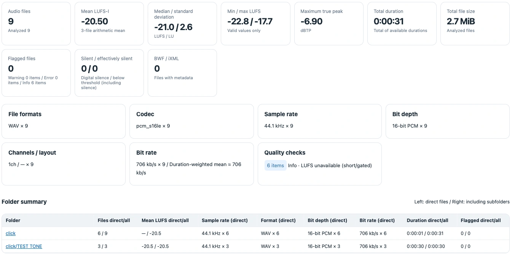
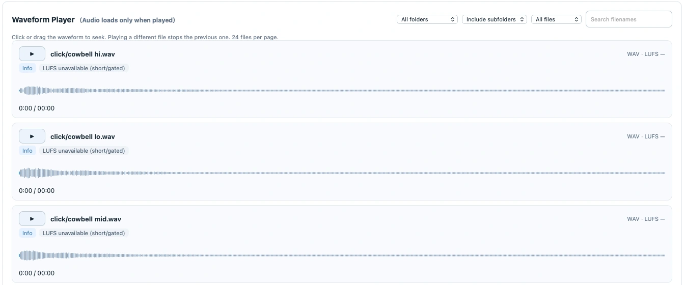

Know what’s inside your audio folders.
Select a folder in Finder and turn its audio files into a browsable quality report. Compare specifications, find files that need attention, and listen without opening a DAW.
Finder Quick Action · ZIP download · Requires Python 3 and FFmpeg/ffprobe
Review file counts, duration, LUFS-I, true peak, formats, sample rates, bit depths, and channel layouts. Folder summaries show both direct files and totals including subfolders.

OK, Info, Warning, and Error separate useful observations from issues that need attention. Short clips with unavailable LUFS and Dual Mono are informational; “Needs attention” includes warnings and errors.
Automatic format checks use the most common specification in each file’s immediate folder. Ties and single observations do not establish a standard. Explicit targets can be set in the configuration file.
Export HTML reports and file/folder CSVs for reviewing measurements, quality reasons, and folder totals. Read BWF/iXML metadata where present.
Audio analysis and playback run on your Mac. Source audio is not modified or uploaded. Reports and cache are stored locally.
Search filenames, filter by folder or quality category, and play files beside their waveforms and quality reasons. Click or drag a waveform to seek. Audio loads when played.

Requires macOS with Automator Quick Actions, Python 3, and FFmpeg/ffprobe. No extra Python packages or virtual environment are needed.
brew install python ffmpeginstall.command. It installs Audio Folder Inspector.workflow in your user Library’s Services folder and backs up any previous version, including the original Japanese-named workflow.Reports offer English, Japanese, French, German, Spanish, Simplified Chinese, and Korean, with automatic macOS language selection. CSV column identifiers remain English.
Try restarting Finder if the newly installed action does not appear. If playback stops after the local service has been idle, run the Quick Action again. After upgrading, generate a new report; existing HTML reports do not update automatically.
Reports: ~/Library/Caches/AudioFolderInspector/Reports/
Preferences: ~/Library/Application Support/AudioFolderInspector/config.json
Warnings indicate a threshold or specification difference, rather than proof of damaged audio. Short or gated material may not produce an integrated LUFS value.
Contact support · Include the tool version, macOS version, and steps to reproduce.
The macOS download includes an English-named workflow, English setup messages, and an English README. Reports retain all seven language choices.
Full UI localization repair: consistent translations across report explanations, quality reasons, folder totals, filters, and player messages in all seven report languages. Preserves waveform playback, folder statistics, quality checks, and CSV export.
The package documents syntax, WAV analysis, and browser language/filter checks. Finder launch and playback through real Mac audio hardware remain unverified in that validation.